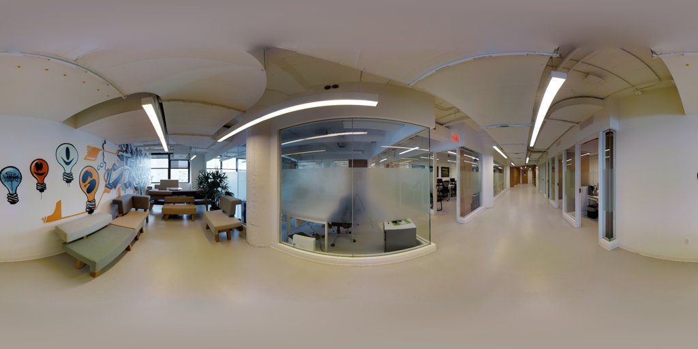
v5 图像证据可视化总览
8 类、每类 2 个案例；原图、人工标注、模型预标注和 GT 按实际可用证据显示。
Manual/Semi 不确定性变化 · 案例 01
Manual/Semi：典型收敛
B6ByNegPMKs_5b5bd1eac4e6462d8c6677b90a4cf9a9选例规则：在熵下降任务中选择最接近下降幅度中位数的任务
Shannon 熵变化
delta_shannon_entropy-0.4499Semi 的 Shannon 熵减去 Manual 的 Shannon 熵；负值表示收敛，正值表示扩张Manual Shannon 熵
manual_shannon_entropy0.4499按 Manual 各聚类支持数换算概率后计算 −Σp×ln(p)Semi Shannon 熵
semi_shannon_entropy0按 Semi 各聚类支持数换算概率后计算 −Σp×ln(p)Manual 模式数
manual_mode_count1.8Manual 等量重聚类中得到的模式数量Semi 模式数
semi_mode_count1Semi 等量重聚类中得到的模式数量数据来源：SEMI_25_CONVERGENCE_EXPANSION_ALL_IMAGES.csv；RAW_ANNOTATION_LEDGER_ALL_2513.csv
Manual/Semi 不确定性变化 · 案例 02
Manual/Semi：极端扩张
q9vSo1VnCiC_1cd414875b9b4311bc6a179d91e6270d选例规则：在熵上升任务中选择 delta_shannon_entropy 最大的任务
Shannon 熵变化
delta_shannon_entropy1.3863Semi 的 Shannon 熵减去 Manual 的 Shannon 熵；负值表示收敛，正值表示扩张Manual Shannon 熵
manual_shannon_entropy0按 Manual 各聚类支持数换算概率后计算 −Σp×ln(p)Semi Shannon 熵
semi_shannon_entropy1.3863按 Semi 各聚类支持数换算概率后计算 −Σp×ln(p)Manual 模式数
manual_mode_count1Manual 等量重聚类中得到的模式数量Semi 模式数
semi_mode_count4Semi 等量重聚类中得到的模式数量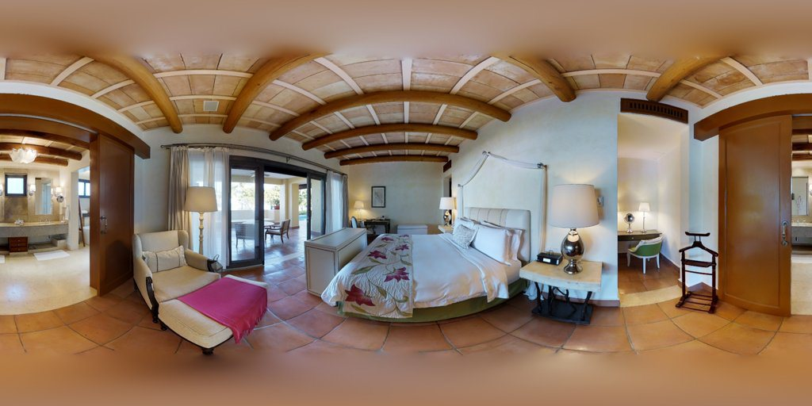
数据来源：SEMI_25_CONVERGENCE_EXPANSION_ALL_IMAGES.csv；RAW_ANNOTATION_LEDGER_ALL_2513.csv
模型预标注响应 · 案例 03
模型提案：高保留
wc2JMjhGNzB_ec04ef10a0664e94878aa2d0f1720c2f选例规则：在高提案保留任务中选择编辑比例最接近该组中位数的任务
编辑比例
edit_rate0.25发生几何编辑的 Semi 记录数除以该任务 Semi 记录数编辑 RMSE 中位数
edit_rmse_median0模型初始点与最终点循环对齐后，像素 RMSE 的任务内中位数拓扑变化记录数
topology_change_count0模型初始角点数与最终角点数不同的 Semi 记录数Shannon 熵变化
delta_shannon_entropy-0.8488Semi 的 Shannon 熵减去 Manual 的 Shannon 熵；负值表示收敛，正值表示扩张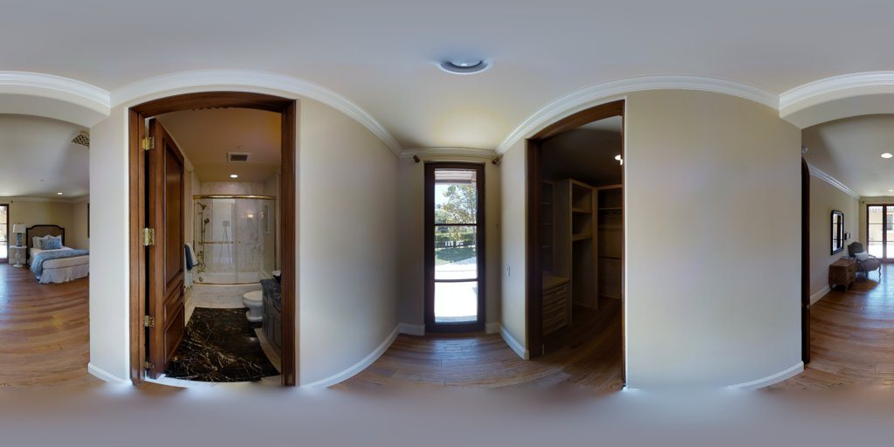
数据来源：PROPOSAL_TASK_ANCHORING_AND_DISCOVERY.csv；PROPOSAL_GEOMETRY_RECORDS.csv
模型预标注响应 · 案例 04
模型提案：大幅修正
q9vSo1VnCiC_a424533651804a38a55b1252daccc81e选例规则：先按拓扑变化记录数、再按编辑 RMSE 选择修正幅度最大的任务
编辑比例
edit_rate1发生几何编辑的 Semi 记录数除以该任务 Semi 记录数编辑 RMSE 中位数
edit_rmse_median29.1197模型初始点与最终点循环对齐后，像素 RMSE 的任务内中位数拓扑变化记录数
topology_change_count0模型初始角点数与最终角点数不同的 Semi 记录数Shannon 熵变化
delta_shannon_entropy-0.3819Semi 的 Shannon 熵减去 Manual 的 Shannon 熵；负值表示收敛，正值表示扩张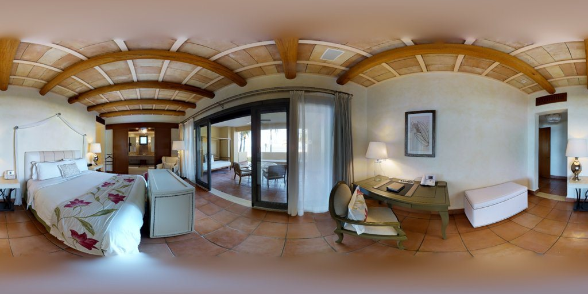
数据来源：PROPOSAL_TASK_ANCHORING_AND_DISCOVERY.csv；PROPOSAL_GEOMETRY_RECORDS.csv
Crowd–GT 关系 · 案例 05
Crowd–GT：非最大支持模式更接近 GT
UwV83HsGsw3_a3630444bbd94cd6ac4edbe2dc1221de选例规则：在有支持的非最大模式更接近 GT 的任务中选择 GT 差值最大的任务
最佳模式相对主模式的 GT 差值
crowd_gt_gap_best_minus_largest0.1222最接近 GT 模式的 IoU 中位数减去最大支持模式的 IoU 中位数最大模式支持数
largest_cluster_support2最大聚类包含的人工标注记录数第二模式支持数
second_cluster_support2第二大聚类包含的人工标注记录数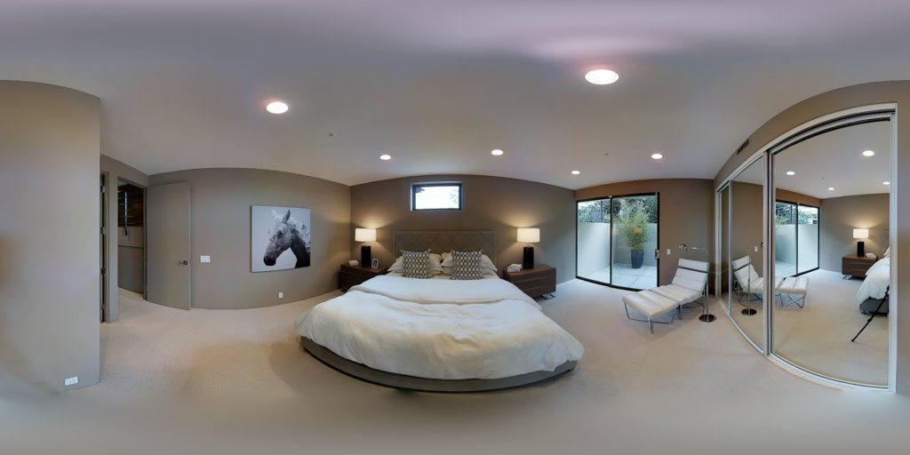
数据来源：CROWD_GT_101_GEOMETRIC_CAUSE_AUDIT.csv；C1_CROWD_GT_CLUSTER_METRICS.CSV
Crowd–GT 关系 · 案例 06
Crowd–GT：分散分歧或低 GT 对齐
q9vSo1VnCiC_1cd414875b9b4311bc6a179d91e6270d选例规则：在全部单例或低 GT 对齐任务中选择最大模式支持最弱的任务
最佳模式相对主模式的 GT 差值
crowd_gt_gap_best_minus_largest0.2298最接近 GT 模式的 IoU 中位数减去最大支持模式的 IoU 中位数最大模式支持数
largest_cluster_support1最大聚类包含的人工标注记录数第二模式支持数
second_cluster_support1第二大聚类包含的人工标注记录数数据来源：CROWD_GT_101_GEOMETRIC_CAUSE_AUDIT.csv；C1_CROWD_GT_CLUSTER_METRICS.CSV
双标注者几何差异 · 案例 07
双标注者：同拓扑坐标差异最大
pRbA3pwrgk9_9c9bed9bf7d94ac0bcea18e3bf521930选例规则：在相同拓扑双人任务中选择循环对齐 RMSE 最大的任务
循环对齐坐标 RMSE
cyclic_rmse_diagonal_normalized0.2774相同拓扑的两份几何循环或反向对齐后的最小坐标 RMSE，再除以全景图对角线左侧角点数
n_corners_left8左侧标注中成功规范配对的 ceiling/floor 点总数右侧角点数
n_corners_right8右侧标注中成功规范配对的 ceiling/floor 点总数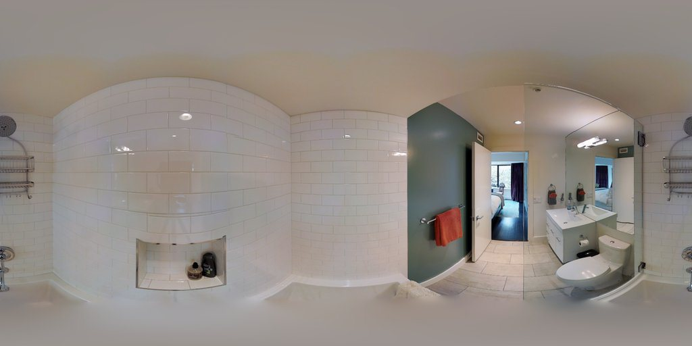
数据来源：DUAL_ANNOTATOR_GEOMETRY_SENSITIVITY_ALL.csv；RAW_ANNOTATION_LEDGER_ALL_2513.csv
双标注者几何差异 · 案例 08
双标注者：拓扑不同
VFuaQ6m2Qom_f0be18aa2f1d4aa2b6adf355a86f34b8选例规则：在拓扑不同任务中选择角点数差异最大的任务
左侧角点数
n_corners_left26左侧标注中成功规范配对的 ceiling/floor 点总数右侧角点数
n_corners_right14右侧标注中成功规范配对的 ceiling/floor 点总数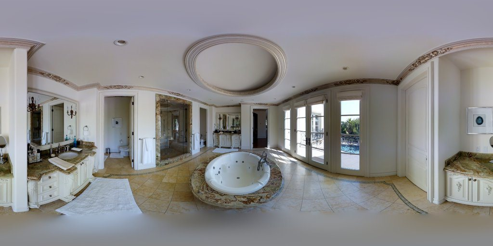
数据来源：DUAL_ANNOTATOR_GEOMETRY_SENSITIVITY_ALL.csv；RAW_ANNOTATION_LEDGER_ALL_2513.csv
持续多峰 · 案例 09
持续多峰：重放中稳定分裂
uNb9QFRL6hY_8b6f1b0b025848b482e747ab6a027b97选例规则：选择全部前缀重放中支持多峰比例最高的任务
重放支持多峰比例
supported_replay_rate0.8911该任务在前缀抽样重放中被判为“有支持的多峰”的次数除以全部重放次数k=5 支持多峰比例
k5_supported_rate0.53每次抽取 5 份标注时判为“有支持的多峰”的重放比例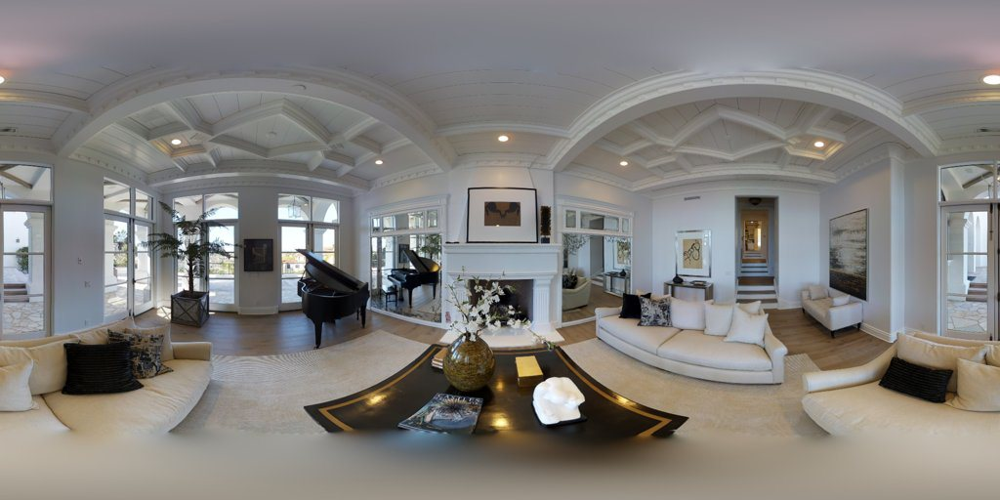
数据来源：C1_K22_PREFIX_REPLAY.csv；PERSISTENT_DISAGREEMENT_TASKS.CSV
持续多峰 · 案例 10
持续多峰：增加标注后暴露
rPc6DW4iMge_0012f6dcce9645778ac459e189cf0db3选例规则：在完整样本支持多峰的任务中选择 k=5 支持多峰比例最低者
重放支持多峰比例
supported_replay_rate0.3686该任务在前缀抽样重放中被判为“有支持的多峰”的次数除以全部重放次数k=5 支持多峰比例
k5_supported_rate0.06每次抽取 5 份标注时判为“有支持的多峰”的重放比例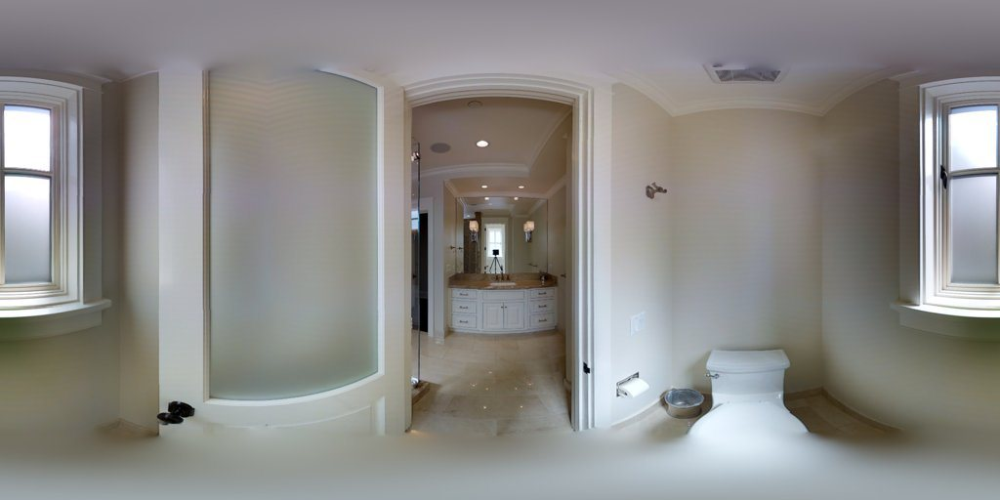
数据来源：C1_K22_PREFIX_REPLAY.csv；PERSISTENT_DISAGREEMENT_TASKS.CSV
元标签与实际行为 · 案例 11
元标签：报告可接受但明显编辑
wc2JMjhGNzB_ec04ef10a0664e94878aa2d0f1720c2f选例规则：在报告可接受且有实质编辑的记录中选择几何编辑 RMSE 最大者
几何编辑 RMSE
geometry_edit_rmse_px19.128模型初始点与最终人工点循环对齐后的像素 RMSE冻结有效操作时间
active_time_observed_seconds130.0冻结 active-time 表中 owner-valid 事件累计秒数；不使用 Lead time 回填相对 GT 的 IoU
iou_to_gt0.9256最终布局与当前 operational GT 的交并比数据来源：TAG_BEHAVIOR_ALL_CASES.csv；ACTIVE_TIME_TASK_WORKER.CSV
元标签与实际行为 · 案例 12
元标签：报告简单但编辑或耗时突出
yqstnuAEVhm_b26ae45c6c12443cbcfc3997f2e63347选例规则：在简单标签矛盾记录中按冻结 active time 与编辑 RMSE 之和选择最大者
几何编辑 RMSE
geometry_edit_rmse_px11.1236模型初始点与最终人工点循环对齐后的像素 RMSE冻结有效操作时间
active_time_observed_seconds175.0冻结 active-time 表中 owner-valid 事件累计秒数；不使用 Lead time 回填相对 GT 的 IoU
iou_to_gt0.9292最终布局与当前 operational GT 的交并比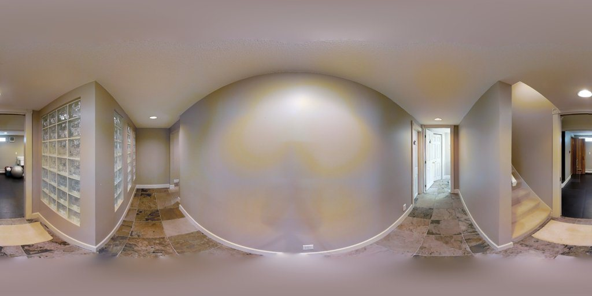
数据来源：TAG_BEHAVIOR_ALL_CASES.csv；ACTIVE_TIME_TASK_WORKER.CSV
被排除及非规范记录 · 案例 13
任务外记录：W31
7y3sRwLe3Va_a775c7668ca9419daaf506e76851821e选例规则：选择 W31 有几何结果的任务外记录中 task ID 最小者
原始结果项数
result_count10该原始 Label Studio annotation 的 result 数组长度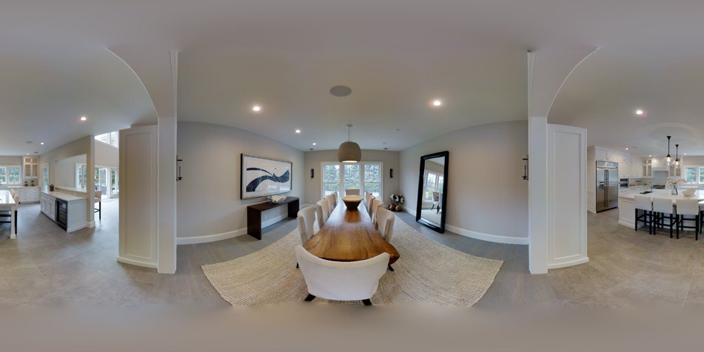
数据来源：OUT_OF_TASK_AND_NONSELECTED_ROWS.csv；RAW_ANNOTATION_LEDGER_ALL_2513.csv
被排除及非规范记录 · 案例 14
修订链：非最终版本与最终版本
rPc6DW4iMge_9d3eb9f5d38844bfb4e5fb2cd05fd3fd选例规则：对同任务同标注者的非最终/最终版本配对，选择版本间几何差异最大的配对
版本间循环对齐 RMSE
revision_rmse0.0126同一任务同一标注者的非最终版本与最终版本循环对齐后的归一化坐标 RMSE原始结果项数
result_count10该原始 Label Studio annotation 的 result 数组长度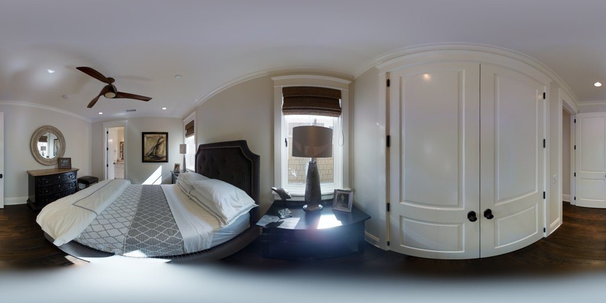
数据来源：OUT_OF_TASK_AND_NONSELECTED_ROWS.csv；REVISION_LINEAGE_ALL_2513.csv
图像歧义与难度 · 案例 15
高图像复杂度代理：Semi 收敛
q9vSo1VnCiC_a424533651804a38a55b1252daccc81e选例规则：在熵下降任务中选择图像固有边缘密度代理最高者
边缘密度代理
edge_density_proxy0.1323灰度下采样图中超过固定梯度阈值的像素比例Shannon 熵变化
delta_shannon_entropy-0.3819Semi 的 Shannon 熵减去 Manual 的 Shannon 熵；负值表示收敛，正值表示扩张数据来源：IMAGE_FEATURES_ALL_214.csv；SEMI_25_CONVERGENCE_EXPANSION_ALL_IMAGES.csv
图像歧义与难度 · 案例 16
高图像复杂度代理：Semi 扩张对照
q9vSo1VnCiC_9ba6cd412cb04c5c9beb15ef9e6d22c5选例规则：在熵上升任务中选择图像固有边缘密度代理最高者
边缘密度代理
edge_density_proxy0.1498灰度下采样图中超过固定梯度阈值的像素比例Shannon 熵变化
delta_shannon_entropy0.5623Semi 的 Shannon 熵减去 Manual 的 Shannon 熵；负值表示收敛，正值表示扩张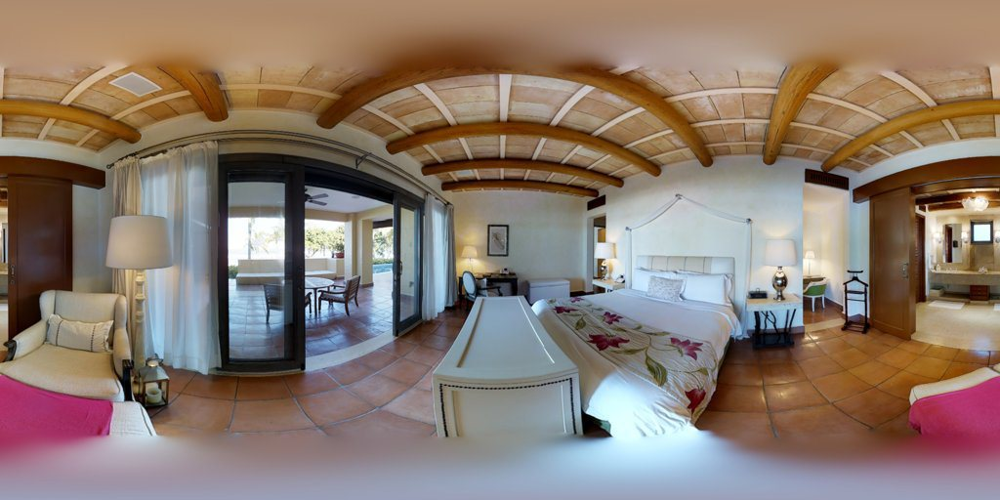
数据来源：IMAGE_FEATURES_ALL_214.csv；SEMI_25_CONVERGENCE_EXPANSION_ALL_IMAGES.csv